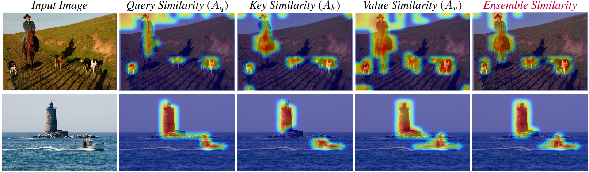

Finding Distributed Object-Centric Properties in Self-Supervised Transformers
CVPR 2026 (Highlight)


Explore how patch-level signals and attention heads reveal objects in frozen vision transformers.
Same image. Different signals.
Choose an attention component to see what it highlights in the original paper examples.


Abstract
Self-supervised Vision Transformers (ViTs) like DINO show an emergent ability to discover objects, typically observed in [CLS] token attention maps of the final layer. However, these maps often contain spurious activations resulting in poor localization. This occurs because the [CLS] token, trained on an image-level objective, summarizes the entire image rather than focusing strictly on objects, diluting the rich, object-centric information existing in local, patch-level interactions. We perform a systematic analysis of inter-patch similarity across all layers and attention components (query, key, and value) to uncover where object-centric information truly resides. Based on our insights, we introduce Object-DINO, a training-free method that extracts this distributed object-centric information to drastically improve downstream tasks like unsupervised object discovery and hallucination mitigation in Multimodal Large Language Models (MLLMs).
Key Analyses & Insights
A core contribution of our work is shifting the focus away from the globally-optimized [CLS] token to uncover how local patch-level interactions natively encode scene structure. Our systematic analysis yields two critical findings that redefine how we extract emergent object representations from self-supervised ViTs:
Insight 1: Complementary Signals in Query, Key, and Value
Prior patch-level methods (like TokenCut) relied exclusively on Key (K) features. By computing normalized self-similarity matrices for all attention components, we discover that Queries (Q), Keys (K), and Values (V) all possess strong but complementary localization properties.
• Query Similarity reveals which patches seek similar information.
• Key Similarity reveals patches offering similar contextual cues.
• Value Similarity identifies patches with similar feature content.
Combining these into a unified Ensemble Similarity Matrix mitigates individual component artifacts, creating a highly robust, low-noise representation of object saliency.
Insight 2: Object-Centricity is a Distributed Property
It is a common assumption that the strongest object representations exist exclusively in the final layer of a ViT. By characterizing every attention head across the network using our ensemble similarity matrix, we find that object-centric information is hierarchically distributed.

Figure 2. Analysis of the object-centric head distribution. (a) The heatmap demonstrates that numerous heads in intermediate layers (e.g., Layers 8-10) are consistently selected as object-centric, showing it is a distributed phenomenon. (b) The final layer contribution plot reveals several "noisy" (non-object-centric) heads. (c) The histogram shows the number of strongly active heads per layer.
Our analysis of over 4,000 COCO images reveals that:
1. Not all final-layer heads are object-centric. Several heads in the final layer encode global context rather than objects. Naively aggregating them introduces significant noise.
2. Intermediate layers matter. Numerous highly robust object-centric heads exist in intermediate layers. Ignoring them discards valuable localization data.
Not all heads see the same thing.
Explore all 12 heads in the final layer of DINO-v3. Compare heads that miss object regions or respond to the background.
What do intermediate layers add?
Compare the three head-selection settings on DINO-v3.
The Object-DINO Method
Motivated by our analysis, we introduce Object-DINO, an entirely training-free algorithm designed to automatically discover and extract the distributed set of object-centric heads. The process operates in two phases:
- Phase 1: Feature Extraction. For every attention head across all layers, we compute the patch similarity maps from its Q, K, and V representations. We ensemble and flatten these maps to create a feature vector that describes that specific head's localization behavior.
- Phase 2: Head Clustering & Selection. We cluster all heads based on these behavioral features using k-means. Guided by the empirical observation that object-centric information concentrates heavily toward the end of the network, we automatically identify the "Object Cluster" as the one containing the highest prevalence of final-layer heads.
By aggregating the similarity maps from only this specialized, distributed subset of heads, Object-DINO produces high-fidelity foreground-background separation while filtering out non-object noise.
From patch similarity to object-centric heads.

Figure 3. Object-DINO Overview. Our training-free algorithm computes patch similarity maps from Query, Key, and Value representations, ensembles them, and clusters the heads to automatically identify the distributed object-centric cluster, filtering noise from non-object-centric heads.
Applications & Downstream Results
1. Unsupervised Object Discovery
We integrate Object-DINO into the graph-based TokenCut framework, replacing their naive final-layer Key aggregation with our automatically discovered distributed heads. This single, training-free swap yields consistent performance gains across all benchmarks for both DINO-v2 and DINO-v3 models. Specifically, we observe CorLoc improvements ranging from +3.6 to +12.4 points on PASCAL VOC and COCO 20k.

Training-free gains across backbones.
2. Mitigating Object Hallucinations in MLLMs
Multimodal Large Language Models (MLLMs) frequently hallucinate objects not present in the image. We leverage Object-DINO as an open-set visual grounder. We propose a training-free, dual-branch decoding strategy: a standard branch and a visual guidance branch steered by the Object-DINO saliency map. By amplifying tokens consistent with this explicit visual evidence, our method corrects hallucinations and improves hallucination metrics on the POPE and CHAIR benchmarks, without the heavy computational overhead of multi-pass diffusion methods.

Can visual evidence correct a hallucination?
Replay the paper's next-token example: how many dogs are in the image?
Explore the reported results.
Citation
The website template was inspired by Michaël Gharbi and Ref-NeRF.